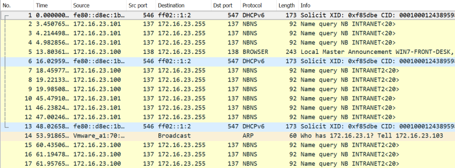

1. Wireshark Capture
VulnerabilityFrom the above we can see the
NBNS(NetBIOS Name Service) UDP broadcasts (note the 255) from
both 172.16.23.100 and 172.16.23.101.
ExploitThis means we could use Responder to
respond to them with poisoned replies saying that our machine 172.16.23.10 is what they’re looking for.